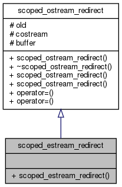

#include <iostream.h>
Inheritance diagram for scoped_estream_redirect:

Collaboration diagram for scoped_estream_redirect:
Public Member Functions | |
| scoped_estream_redirect (std::ostream &costream=std::cerr, object pyostream=module_::import("sys").attr("stderr")) | |
 Public Member Functions inherited from scoped_ostream_redirect Public Member Functions inherited from scoped_ostream_redirect | |
| scoped_ostream_redirect (std::ostream &costream=std::cout, object pyostream=module_::import("sys").attr("stdout")) | |
| ~scoped_ostream_redirect () | |
| scoped_ostream_redirect (const scoped_ostream_redirect &)=delete | |
| scoped_ostream_redirect (scoped_ostream_redirect &&other)=default | |
| scoped_ostream_redirect & | operator= (const scoped_ostream_redirect &)=delete |
| scoped_ostream_redirect & | operator= (scoped_ostream_redirect &&)=delete |
Additional Inherited Members | |
| Protected Attributes inherited from scoped_ostream_redirect | |
| std::streambuf * | old |
| std::ostream & | costream |
| detail::pythonbuf | buffer |
Detailed Description
Like scoped_ostream_redirect, but redirects cerr by default. This class is provided primary to make py::call_guard easier to make.
.. code-block:: cpp
m.def("noisy_func", &noisy_func, py::call_guard<scoped_ostream_redirect, scoped_estream_redirect>());
Constructor & Destructor Documentation
◆ scoped_estream_redirect()
|
inline |
The documentation for this class was generated from the following file:
- /home/graduate/wuh20/github/AnalogsEnsemble/CGrid/pybind11/include/pybind11/iostream.h